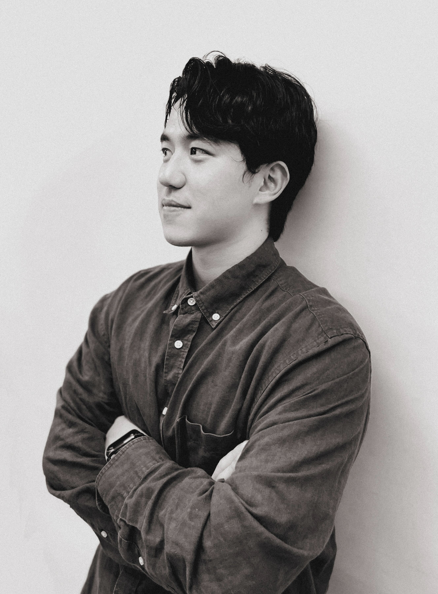
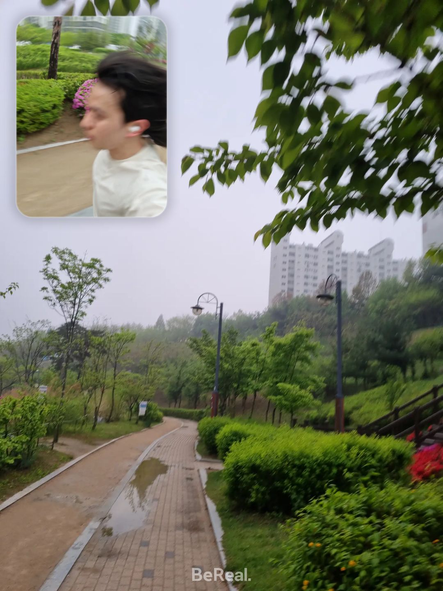
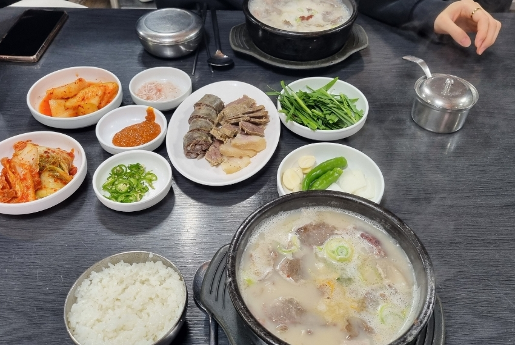
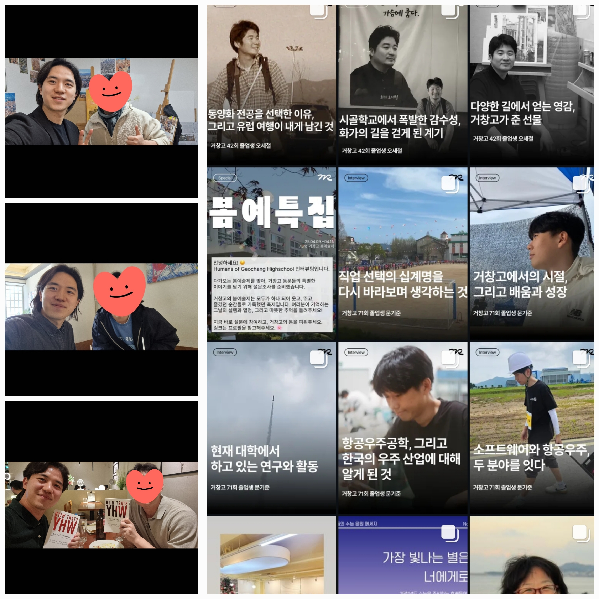
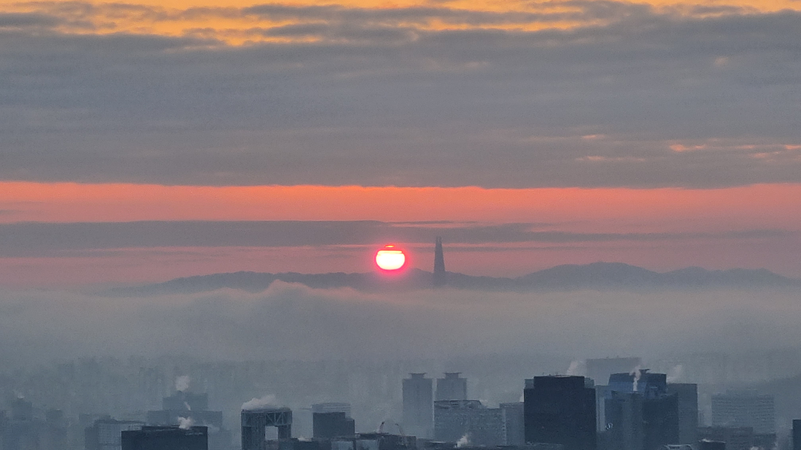

저는 빠르게 앞서가지는 않지만, 언제나 제 방향을 향해 천천히 걷는 사람입니다.
외적인 성과보다 중요한 것은, 제가 진심으로 옳다고 느끼는 길을 걷고 있다는 감각입니다.
그래서 제 삶의 기준은 속도가 아니라 방향이며,
결과보다 과정을 얼마나 성찰했는지에
더 큰 가치를 둡니다.
저는 자주 멈춰 서서 제 자신에게 질문합니다.
“지금 나는 나다운 길을 걷고 있는가?”
비교에 흔들릴 때도 있지만, 삶은 비교가 아니라 의미로 완성된다고 믿고 있습니다.
느리더라도 저는 저만의 리듬으로, 저만의 방식으로 나아갑니다.
그리고 저는 그 과정을 무엇보다 소중하게 생각합니다.

👋 안녕하세요. 저는 질문을 멈추지 않는 사람, 강신석입니다.
🚀 실패보다 실험을, 성공보다 성장을 더 많이 사랑합니다.
🔥 깊이 이해하고, 진심으로 실행하는 데에 시간을 아끼지 않습니다.
🎯 삶의 속도보다 방향이 더 중요하다고 믿습니다.
🧭 새로운 경험과 사람을 통해 나다움을 확장해갑니다.
🦅 사람의 마음에 불을 지피는 것을 좋아하는 동기부여 전문가입니다.

달리기를 하며 리프레쉬, 평정심을 회복하고,
체력을 기르고 있어요.

국밥 투어를 부산에서 1년간 매주 할 정도로, 국밥을 좋아합니다.
서울 국밥 맛집 리스트도 있어요!

사람들과 대화할 때, 편견 없이 대화하는 것을 즐겨요.
인터뷰 프로젝트를 통해 순수한 대화를 이어가고 있어요.

4년 간 매년 첫 날, 일출을 보러 등산을 하고 있습니다.
일몰과 일출 모두 좋아해요!